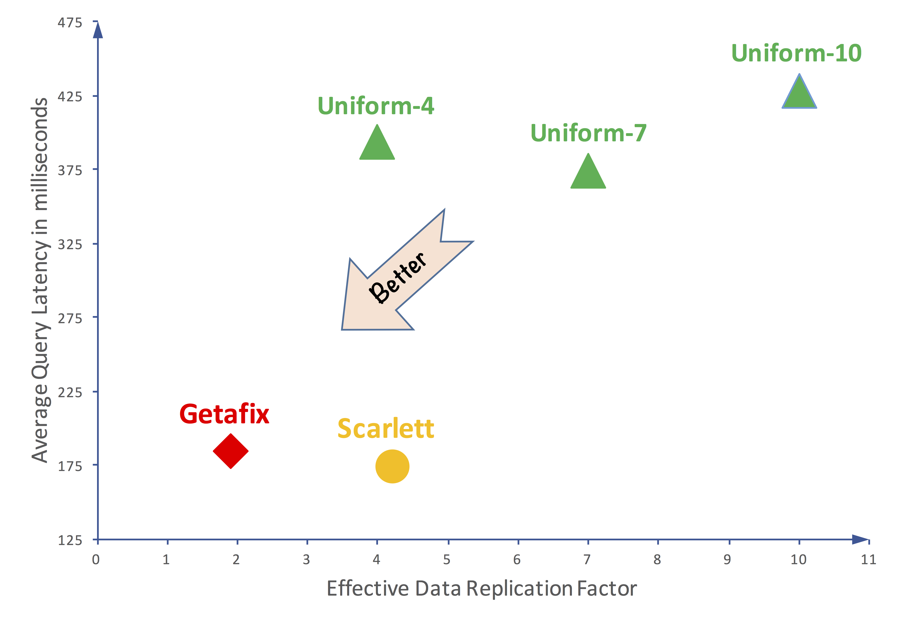

Ashwini Raina
[Curriculum Vitae] [email: araina@cs.princeton.edu]
Hello, I'm a Ph.D. student in Computer Science department at Princeton Univeristy,
advised by Prof. Michael J. Freedman. My research interests are in distributed systems and storage. My current research focuses on building fast and affordable key-value stores on emerging storage technologies. I completed my master's at University of Illinois Urbana-Champaign under the guidance of Prof. Indranil Gupta, with focus on real-time analytics systems. Prior to that, I worked at Qualcomm and Apple, and built high-impact mobile computing systems.
Research
PrismDB (under submission [arxiv]) : A novel key-value store architecture that exploits two extreme ends of the spectrum of modern NVMe storage technologies (3D XPoint and QLC NAND flash) simultaneously. PrismDB uses a new compaction algorithm for multi-tiered storage that is inspired by the classic cost-benefit analysis of log cleaning. Compared to the standard use of RocksDB on flash in datacenters, PrismDB's average throughput on tiered storage is 3.3X faster and its read tail latency is 2X better, using equivalently-priced hardware.
Getafix [EuroSys'18] : A data replication scheme that cuts memory costs in interactive analytics engines. Getafix tracks data segment popularity in a cluster and runs a modified best-fit algorithm to find a memory efficient allocation. It can reduce memory costs by 2X without sacrificing query performance and save firms as much as 10 million annually. It also automatically tiers a heterogeneous cluster and reduces cluster maintanance overhead.

Rubble (ongoing) : Rubble is a novel replication scheme that leverages new generation network storage protocols like NVMe over Fabrics and Remote Direct Memory Access(RDMA) to reduce CPU and I/O overhead in replicated LSM-tree based key value stores. Under Rubble compactions are run only on the primary replica and then the compacted SST files are shipped via NVMe over Fabrics to other replicas. This new scheme eliminates the CPU and I/O overhead brought by the compaction processes on most replicas.
Industry Experience
I have worked in the mobile computing team at Qualcomm that implemented and influenced the design of the first LTE/4G protocols. I have also worked at Apple as an iOS engineer on the iOS data stack. Other contributions include a novel compression scheme for LTE/4G stack and co-design of a hardware accelerator for data stack packet processing. Most of the work is present in leading iOS and android devices and led to 14 granted patents.
Publications
Efficient Compactions Between Storage Tiers with PrismDB
Ashwini Raina, Jianan Lu, Asaf Cidon, Michael J. Freedman
Under submission [arxiv]
Popular is Cheaper : Curtailing Memory Costs in Interactive Analytics Engines
Mainak Ghosh, Ashwini Raina, Le Xu, Xiaoyao Qing, Indranil Gupta, Himanshu Gupta
In proc. 13th European Conference on Computer Systems (EuroSys), 2018 [paper]
Patents
14 granted patents for LTE/4G protocol design and data compression techniques - [link].
Teaching
Course teaching assistant for Principles of Computer System Design, Distributed Systems and Discrete Structures